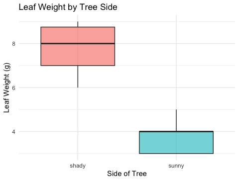
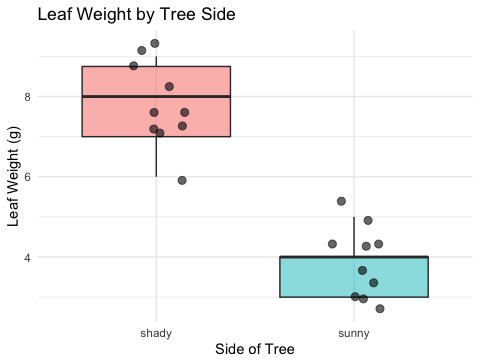
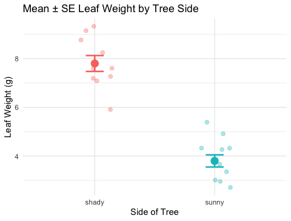

Wrangling, summaries, statistics, and our first real comparisons
2026-07-03
data/, figures/, scripts/)<-c(), data types (numeric, character, logical)?read_excel() and read_csv(); inspecting with glimpse(), head(), dim()%>% reads as “then”; chains steps togethergeom_jitter(), saved as PNGNote
✅ Key idea from Lecture 02
You can get data into R and make a plot. Today we learn to wrangle and describe what we actually have.
Part 1 — Tidyverse wrangling:
filter() — pick rows by a conditionselect() — pick columns by namemutate() — create new columnsarrange() — sort rowsPart 2 — Descriptive statistics:
sum(!is.na())group_by() + summarize()skimr for a fast full overviewTip
🖐 Try it yourself
By the end you will wrangle and describe our leaf data in one connected pipeline.
Our tools today:
readxltidyverseskimrReferences:
Naming conventions:
_df_plot_modelNote
Install once — load every session
install.packages("skimr")library(skimr) activates it.Rows: 20
Columns: 5
$ index <dbl> 1, 2, 3, 4, 5, 6, 7, 8, 9, 10, 11, 12, 13, 14, 15, 16, 17, 1…
$ side <chr> "sunny", "sunny", "sunny", "sunny", "sunny", "sunny", "sunny…
$ weight_g <dbl> 4, 3, 5, 3, 4, 3, 5, 4, 3, 4, 7, 8, 6, 9, 8, 7, 8, 9, 9, 7
$ width_cm <dbl> 12, 14, 12, 13, 15, 13, 16, 13, 14, 15, 9, 18, 17, 18, 19, 1…
$ height_cm <dbl> 21, 22, 21, 23, 22, 23, 21, 24, 23, 23, 28, 29, 27, 28, 27, …<chr> = character<dbl> = numericFive functions do most of the work in data wrangling:
| Function | What it does |
|---|---|
filter() |
keep rows matching a condition |
select() |
keep columns by name |
mutate() |
add or change a column |
arrange() |
sort rows |
summarize() |
collapse rows to a summary |
All take a data frame as first input (via %>%) and return a data frame.
Note
✅ Key idea
These five verbs are the tidyverse grammar for data. Learn them once and you can wrangle almost any dataset.
Think of them as building blocks:
filter() → rows you want
select() → columns you want
mutate() → new columns you need
arrange() → order the rows
summarize()→ collapse to summariesfilter() — Picking Rows# A tibble: 6 × 5
index side weight_g width_cm height_cm
<dbl> <chr> <dbl> <dbl> <dbl>
1 1 sunny 4 12 21
2 2 sunny 3 14 22
3 3 sunny 5 12 21
4 4 sunny 3 13 23
5 5 sunny 4 15 22
6 6 sunny 3 13 23# A tibble: 6 × 5
index side weight_g width_cm height_cm
<dbl> <chr> <dbl> <dbl> <dbl>
1 11 shady 7 9 28
2 12 shady 8 18 29
3 13 shady 6 17 27
4 14 shady 9 18 28
5 15 shady 8 19 27
6 16 shady 7 19 28# A tibble: 6 × 5
index side weight_g width_cm height_cm
<dbl> <chr> <dbl> <dbl> <dbl>
1 12 shady 8 18 29
2 14 shady 9 18 28
3 15 shady 8 19 27
4 17 shady 8 18 29
5 18 shady 9 17 27
6 19 shady 9 19 27Common comparison operators:
| Symbol | Meaning |
|---|---|
== |
exactly equal |
!= |
not equal |
> < |
greater / less than |
>= <= |
greater / less than or equal |
| is.na | return all NA rows |
| !is.na | return all rows that are NOT NA |
Warning
⚠️ Watch out!
= assigns a value.== tests equality.filter(side = "sunny") → error.filter(side == "sunny") → correct.select() — Picking Columns# A tibble: 6 × 2
side weight_g
<chr> <dbl>
1 sunny 4
2 sunny 3
3 sunny 5
4 sunny 3
5 sunny 4
6 sunny 3# A tibble: 6 × 4
side weight_g width_cm height_cm
<chr> <dbl> <dbl> <dbl>
1 sunny 4 12 21
2 sunny 3 14 22
3 sunny 5 12 21
4 sunny 3 13 23
5 sunny 4 15 22
6 sunny 3 13 23# A tibble: 6 × 1
weight_g
<dbl>
1 4
2 3
3 5
4 3
5 4
6 3select() matters:
select() keeps your workspace cleanstarts_with("x") — columns starting with “x”ends_with("_g") — columns ending with “_g”contains("cm") — columns containing “cm”mutate() — Creating New Columns# A tibble: 6 × 6
index side weight_g width_cm height_cm weight_mg
<dbl> <chr> <dbl> <dbl> <dbl> <dbl>
1 1 sunny 4 12 21 4000
2 2 sunny 3 14 22 3000
3 3 sunny 5 12 21 5000
4 4 sunny 3 13 23 3000
5 5 sunny 4 15 22 4000
6 6 sunny 3 13 23 3000# A tibble: 6 × 6
index side weight_g width_cm height_cm size_class
<dbl> <chr> <dbl> <dbl> <dbl> <chr>
1 1 sunny 4 12 21 small
2 2 sunny 3 14 22 small
3 3 sunny 5 12 21 small
4 4 sunny 3 13 23 small
5 5 sunny 4 15 22 small
6 6 sunny 3 13 23 small # A tibble: 6 × 7
index side weight_g width_cm height_cm weight_mg area_approx
<dbl> <chr> <dbl> <dbl> <dbl> <dbl> <dbl>
1 1 sunny 4 12 21 4000 252
2 2 sunny 3 14 22 3000 308
3 3 sunny 5 12 21 5000 252
4 4 sunny 3 13 23 3000 299
5 5 sunny 4 15 22 4000 330
6 6 sunny 3 13 23 3000 299mutate() keeps all existing columns and adds new onesif_else(condition, value_if_true, value_if_false) to create categoriesNote
✅ Key idea
mutate() never removes columns — it adds to the right of your data frame.
To overwrite a column, just use the same name on the left: mutate(weight_g = round(weight_g, 1))
arrange() — Sorting Rows# A tibble: 20 × 5
index side weight_g width_cm height_cm
<dbl> <chr> <dbl> <dbl> <dbl>
1 2 sunny 3 14 22
2 4 sunny 3 13 23
3 6 sunny 3 13 23
4 9 sunny 3 14 23
5 1 sunny 4 12 21
6 5 sunny 4 15 22
7 8 sunny 4 13 24
8 10 sunny 4 15 23
9 3 sunny 5 12 21
10 7 sunny 5 16 21
11 13 shady 6 17 27
12 11 shady 7 9 28
13 16 shady 7 19 28
14 20 shady 7 19 29
15 12 shady 8 18 29
16 15 shady 8 19 27
17 17 shady 8 18 29
18 14 shady 9 18 28
19 18 shady 9 17 27
20 19 shady 9 19 27# A tibble: 20 × 5
index side weight_g width_cm height_cm
<dbl> <chr> <dbl> <dbl> <dbl>
1 14 shady 9 18 28
2 18 shady 9 17 27
3 19 shady 9 19 27
4 12 shady 8 18 29
5 15 shady 8 19 27
6 17 shady 8 18 29
7 11 shady 7 9 28
8 16 shady 7 19 28
9 20 shady 7 19 29
10 13 shady 6 17 27
11 3 sunny 5 12 21
12 7 sunny 5 16 21
13 1 sunny 4 12 21
14 5 sunny 4 15 22
15 8 sunny 4 13 24
16 10 sunny 4 15 23
17 2 sunny 3 14 22
18 4 sunny 3 13 23
19 6 sunny 3 13 23
20 9 sunny 3 14 23# A tibble: 20 × 5
index side weight_g width_cm height_cm
<dbl> <chr> <dbl> <dbl> <dbl>
1 14 shady 9 18 28
2 18 shady 9 17 27
3 19 shady 9 19 27
4 12 shady 8 18 29
5 15 shady 8 19 27
6 17 shady 8 18 29
7 11 shady 7 9 28
8 16 shady 7 19 28
9 20 shady 7 19 29
10 13 shady 6 17 27
11 3 sunny 5 12 21
12 7 sunny 5 16 21
13 1 sunny 4 12 21
14 5 sunny 4 15 22
15 8 sunny 4 13 24
16 10 sunny 4 15 23
17 2 sunny 3 14 22
18 4 sunny 3 13 23
19 6 sunny 3 13 23
20 9 sunny 3 14 23desc(column) → descending order (largest first)Tip
arrange() is rarely used in the middle of an analysis pipeline — it is most useful at the end when you want to inspect your results in a specific order.
# Chain all the verbs together -------------------------
# Read it top to bottom like a recipe
wrangled_df <- tree_df %>%
filter(weight_g > 0) %>% # remove any zeros
select(side, weight_g, height_cm) %>% # keep only needed cols
mutate(
weight_mg = weight_g * 1000,
size_class = if_else(weight_g > 5, "large", "small")
) %>%
arrange(side, desc(weight_g)) # sort by side, then weight
head(wrangled_df)# A tibble: 6 × 5
side weight_g height_cm weight_mg size_class
<chr> <dbl> <dbl> <dbl> <chr>
1 shady 9 28 9000 large
2 shady 9 27 9000 large
3 shady 9 27 9000 large
4 shady 8 29 8000 large
5 shady 8 27 8000 large
6 shady 8 29 8000 large Read the pipeline out loud:
- Take
tree_df,
- then filter to non-zero weights,
- then select three columns,
- then add two new columns,
- then sort by side and weight.
Note
✅ Key idea
The pipeline %>% is what makes tidyverse readable. You can see every step in order — unlike nested function calls that read inside-out.
Biological prediction: Leaves on the shady side of a tree will be larger and heavier to capture more of the limited light.
| Hypothesis | |
|---|---|
| H₀ — null | No difference in leaf size between sunny and shady sides |
| Hₐ — alternate | Leaf size differs between sunny and shady sides |
Plan for this unit:
Statistics helps us decide which hypothesis is better supported by the data.
\[\bar{x} = \frac{\sum_{i=1}^{n} x_i}{n}\]
Example:
Values: 5, 6, 7, 8, 50 → mean = 15.2
Is 15.2 a fair summary? Not really — the outlier dominates!
Why it matters:
[1] 4 3 5 3 4 3 5 4 3 4filter(side == "sunny") — keeps only sunny rowspull(weight_g) — extracts that column as a vectorna.rm = TRUE — removes any NA before computingKey pattern:
filter() → picks rows
pull() → extracts a column as a vector
The middle value when data are sorted
| Sorted data | Median |
|---|---|
| 5, 6, 7, 8, 50 | 7 |
| 5, 6, 7, 8, 50, 51 | (7 + 8) / 2 = 7.5 |
Median sunny: 4 Median shady: 8 \[s^2 = \frac{\sum_{i=1}^{n}(x_i - \bar{x})^2}{n - 1}\]
Dividing by \(n - 1\) gives an unbiased estimate of population variance.
Larger variance = more spread = more uncertainty
Variance sunny: 0.62 Variance shady: 1.07 Note
Variance is in squared units (g²) — hard to interpret. That is why we use SD.
\[s = \sqrt{s^2} = \sqrt{\frac{\sum(x_i - \bar{x})^2}{n-1}}\]
\[SE = \frac{s}{\sqrt{n}}\]
| Describes | |
|---|---|
| SD | spread of individual data points |
| SE | precision of the sample mean |
We report SE when making claims about group means.
n sunny = 10 SE sunny = 0.25 gn shady = 10 SE shady = 0.33 glength()[1] 5[1] 2length(x) counts all positions in the vector — including NAsum(!is.na())[1] FALSE FALSE TRUE FALSE TRUE[1] TRUE TRUE FALSE TRUE FALSE[1] 3How it works step by step:
is.na(x) → TRUE for each NA!is.na(x) → flips it: TRUE for real valuessum(...) → counts TRUEsTip
Best practice: always use sum(!is.na(x)) when you need n — even when you think there are no NAs.
--- Sunny Leaves ---n = 10 Mean = 3.8 Median = 4 SD = 0.79 SE = 0.25 na.rm = TRUEcat() prints clean labelled outputgroup_by() nextgroup_by() + summarize()# Calculate all stats for both sides at once ----------
stats_df <- tree_df %>%
group_by(side) %>%
summarize(
n = sum(!is.na(weight_g)),
mean_wt = round(mean(weight_g, na.rm = TRUE), 2),
med_wt = round(median(weight_g, na.rm = TRUE), 2),
sd_wt = round(sd(weight_g, na.rm = TRUE), 2),
se_wt = round(sd_wt / sqrt(n), 2)
)
stats_df# A tibble: 2 × 6
side n mean_wt med_wt sd_wt se_wt
<chr> <int> <dbl> <dbl> <dbl> <dbl>
1 shady 10 7.8 8 1.03 0.33
2 sunny 10 3.8 4 0.79 0.25group_by(side) — splits the data by the side columnsummarize() — collapses each group to one row of statssd_wt → se_wt)# One group_by() pipe summarizes all measurements -----
size_stats_df <- tree_df %>%
group_by(side) %>%
summarize(
n = sum(!is.na(weight_g)),
mean_wt = round(mean(weight_g, na.rm = TRUE), 2),
mean_ht = round(mean(height_cm, na.rm = TRUE), 2),
mean_wd = round(mean(width_cm, na.rm = TRUE), 2)
)
size_stats_df# A tibble: 2 × 5
side n mean_wt mean_ht mean_wd
<chr> <int> <dbl> <dbl> <dbl>
1 shady 10 7.8 27.9 17.3
2 sunny 10 3.8 22.3 13.7With one group_by() pipe you summarize all three measurements across both sides.
Do the numbers support our hypothesis?
mean_wtmean_htmean_wdskimr| Name | Piped data |
| Number of rows | 20 |
| Number of columns | 5 |
| _______________________ | |
| Column type frequency: | |
| numeric | 4 |
| ________________________ | |
| Group variables | side |
Variable type: numeric
| skim_variable | side | n_missing | complete_rate | mean | sd | p0 | p25 | p50 | p75 | p100 | hist |
|---|---|---|---|---|---|---|---|---|---|---|---|
| index | shady | 0 | 1 | 15.5 | 3.03 | 11 | 13.25 | 15.5 | 17.75 | 20 | ▇▇▇▇▇ |
| index | sunny | 0 | 1 | 5.5 | 3.03 | 1 | 3.25 | 5.5 | 7.75 | 10 | ▇▇▇▇▇ |
| weight_g | shady | 0 | 1 | 7.8 | 1.03 | 6 | 7.00 | 8.0 | 8.75 | 9 | ▂▇▁▇▇ |
| weight_g | sunny | 0 | 1 | 3.8 | 0.79 | 3 | 3.00 | 4.0 | 4.00 | 5 | ▇▁▇▁▃ |
| width_cm | shady | 0 | 1 | 17.3 | 3.02 | 9 | 17.25 | 18.0 | 19.00 | 19 | ▁▁▁▂▇ |
| width_cm | sunny | 0 | 1 | 13.7 | 1.34 | 12 | 13.00 | 13.5 | 14.75 | 16 | ▅▇▅▅▂ |
| height_cm | shady | 0 | 1 | 27.9 | 0.88 | 27 | 27.00 | 28.0 | 28.75 | 29 | ▇▁▆▁▆ |
| height_cm | sunny | 0 | 1 | 22.3 | 1.06 | 21 | 21.25 | 22.5 | 23.00 | 24 | ▆▃▁▇▂ |
Per column and per group: n_missing, mean, sd, percentiles (p0 to p100), and a mini histogram.
Tip
skim() is your fastest first look at any dataset. Pair it with group_by() to compare groups instantly.
# Basic boxplot — data is already long format ---------
tree_box_plot <- tree_df %>%
ggplot(aes(x = side, y = weight_g, fill = side)) +
geom_boxplot(alpha = 0.6, outlier.shape = NA) +
labs(
title = "Leaf Weight by Tree Side",
x = "Side of Tree",
y = "Leaf Weight (g)",
fill = "Side"
) +
theme_minimal() +
theme(legend.position = "none")
tree_box_plot
Boxplot anatomy:
Because our data is in long format, ggplot2 reads side straight off the x-axis — no reshaping needed.
# Add raw data points over the boxplot ----------------
tree_jitter_plot <- tree_df %>%
ggplot(aes(x = side, y = weight_g, fill = side)) +
geom_boxplot(alpha = 0.5, outlier.shape = NA) +
geom_point(
position = position_jitter(width = 0.15, seed = 42),
alpha = 0.6,
size = 2.5
) +
labs(
title = "Leaf Weight by Tree Side",
x = "Side of Tree",
y = "Leaf Weight (g)",
fill = "Side"
) +
theme_minimal() +
theme(legend.position = "none")
tree_jitter_plot
Key arguments:
position_jitter(width = 0.15) — spreads points left and rightseed = 42 — same jitter layout every renderalpha = 0.6 — semi-transparent to show overlapsize = 2.5 — point sizeTip
Always show raw points with a boxplot — with only 10 leaves per group, every point matters!
stat_summary()# stat_summary() computes and plots mean and SE -------
tree_mean_se_plot <- tree_df %>%
ggplot(aes(x = side, y = weight_g, color = side)) +
geom_point(
position = position_jitter(width = 0.15, seed = 42),
alpha = 0.35,
size = 2
) +
stat_summary(fun = mean, geom = "point", size = 4) +
stat_summary(
fun.data = mean_se,
geom = "errorbar",
width = 0.15,
linewidth = 0.9
) +
labs(
title = "Mean ± SE Leaf Weight by Tree Side",
x = "Side of Tree",
y = "Leaf Weight (g)",
color = "Side"
) +
theme_minimal() +
theme(legend.position = "none")
tree_mean_se_plot
Two stat_summary() layers:
| call | what it draws |
|---|---|
fun = mean |
large point at the mean |
fun.data = mean_se |
error bars for ± 1 SE |
alpha = 0.35)filter() — keep rows by conditionselect() — keep columns by namemutate() — add new calculated columnsarrange() — sort rows%>%group_by() + summarize() — all stats for all groups at oncesum(!is.na()) — the right way to count nskim() — instant full dataset overviewgeom_boxplot() + geom_point(), stat_summary()References:
Up next — Lecture 04: